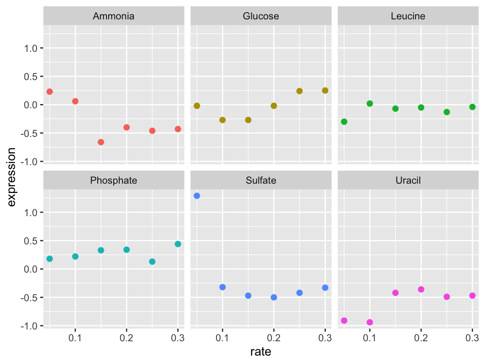
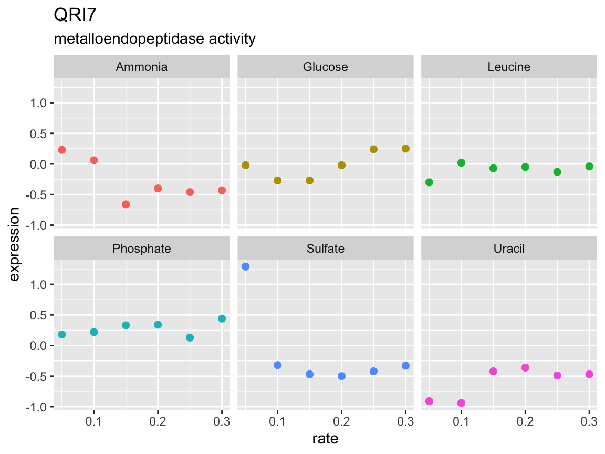
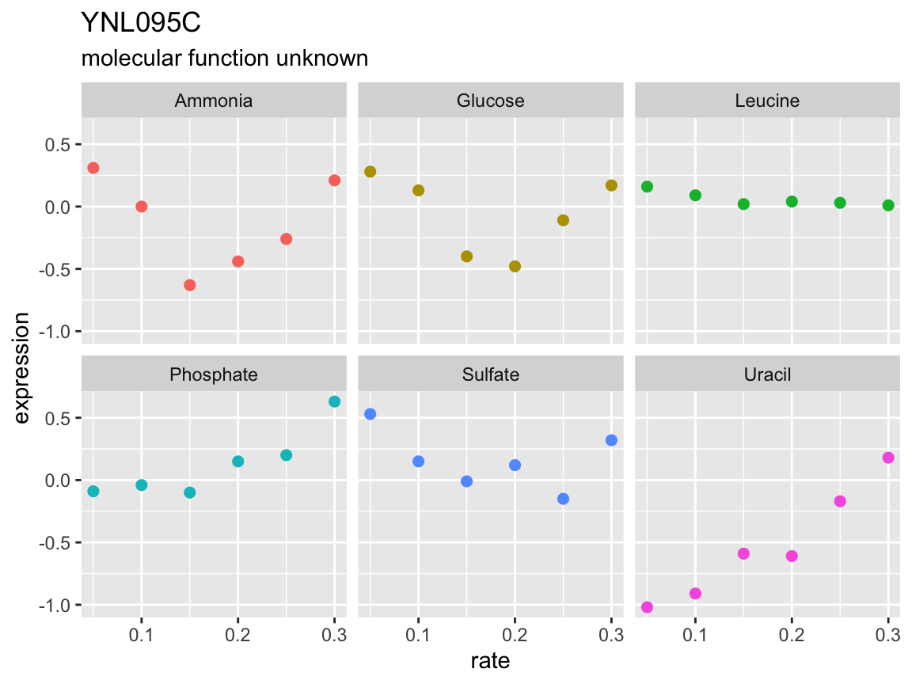
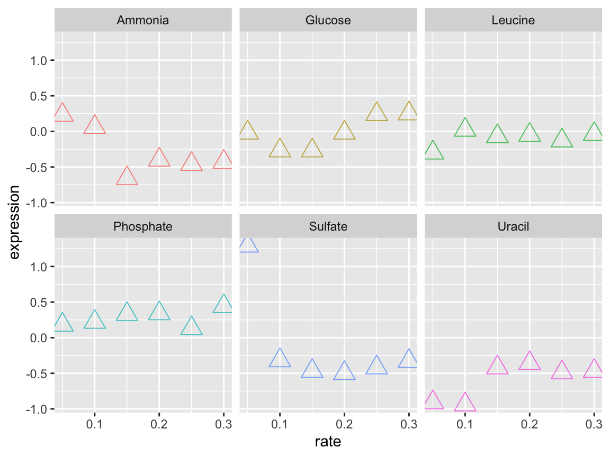

The Rmarkdown for this class is on github
# conditionally download all of the files used in rmarkdown from github
source("https://github.com/rnabioco/bmsc-7810-pbda/raw/main/_posts/2022-12-05-class-10-programming-in-r-part-1/download-files.R")What is a function?
As an analyst you will eventually find yourself in the position of wanting to reuse a block of code. There are two general ways to do this:
- copy-and-paste
- write a function
A function is essentially a block of code that you’ve given a name and saved for later. Functions have several advantages:
- They make your code easier to read
- They reduce the chance of mistakes from repeated copying and pasting
- They make it easier to adapt your code for different requirements
Further reading
- R for Data Science by Garrett Grolemund and Hadley Wickham
- Advanced R by Hadley Wickham
# An example: you want to rescale a numeric vector so all values are between 0 and 1
a <- rnorm(n = 10)
a#> [1] -1.1292023 0.3885605 -1.6844503 0.7907017 -0.4599947 1.3780085
#> [7] 0.2672932 -0.9226258 -1.9090162 0.7799124rng <- range(a)
(a - rng[1]) / (rng[2] - rng[1])#> [1] 0.23724005 0.69898370 0.06831889 0.82132570 0.44083073 1.00000000
#> [7] 0.66209099 0.30008609 0.00000000 0.81804331How to write a function
There are three general steps for writing functions:
- Pick a name
- Identify the inputs
- Add code to the body
# Lets write a function to rescale a numeric vector
rescale_vec <- function(x) {
rng <- range(x)
(x - rng[1]) / (rng[2] - rng[1])
}
rescale_vec(b)
rescale_vec(c)Write functions for the following bits of code
Show answer
The function execution environment
- When running a function an execution environment is created, which is separate from the global environment
- The execution environment contains objects created within the function
- When R searches for an object referenced by a function, the execution environment takes precedence
- If an object is not found in the function environment, R will search in the global environment
Can objects present in the global environment be referenced from within a function?
# Earlier we saved a numeric vector "a"
a#> [1] -1.1292023 0.3885605 -1.6844503 0.7907017 -0.4599947 1.3780085
#> [7] 0.2672932 -0.9226258 -1.9090162 0.7799124sum_nums <- function(x) {
x + a
}
# Yes!
sum_nums(10)#> [1] 8.870798 10.388560 8.315550 10.790702 9.540005 11.378009
#> [7] 10.267293 9.077374 8.090984 10.779912sum_nums <- function(x) {
a <- x + a
}
# When we run sum_nums(), will this overwrite our original vector?
sum_nums(10)
# No! (not when using the '<-' assignment operator)
a#> [1] -1.1292023 0.3885605 -1.6844503 0.7907017 -0.4599947 1.3780085
#> [7] 0.2672932 -0.9226258 -1.9090162 0.7799124A more relevant example
The brauer_gene_exp data contains a data set from a manuscript describing how gene expression changes in yeast under several nutrient limitation conditions. We’ll use this data to illustrate the utility and the power of functions.
Using the Brauer data lets create a scatter plot comparing growth rate vs expression for the gene YDL104C. Use facet_wrap() to create a separate plot for each nutrient.
brauer_gene_exp <- read_csv("data/brauer_gene_exp.csv.gz")
What if you want to create this plot for other genes? Write a function the takes a data.frame and systematic_name as inputs and creates scatter plots for each nutrient
# Fill in the function body
# You can include default values for your arguments
plot_expr <- function(input, sys_name = "YNL049C") {
????
}Show answer
plot_expr <- function(input, sys_name = "YNL049C") {
gg_data <- input %>%
filter(systematic_name == sys_name)
gg_data %>%
ggplot(aes(rate, expression, color = nutrient)) +
geom_point(size = 2) +
facet_wrap(~ nutrient) +
theme(legend.position = "none")
}p <- plot_expr(
input = brauer_gene_exp,
sys_name = "YDL104C"
)
# You can also use the %>% pipe with your custom functions
p <- brauer_gene_exp %>%
plot_expr(sys_name = "YDL104C")
p
Modify our plotting function to add the gene name as the plot title and the molecular function (MF) as a subtitle
Show answer
plot_expr <- function(input, sys_name) {
gg_data <- input %>%
filter(systematic_name == sys_name)
plot_title <- gg_data$name[1]
plot_sub <- gg_data$MF[1]
gg_data %>%
ggplot(aes(rate, expression, color = nutrient)) +
geom_point(size = 2) +
labs(title = plot_title, subtitle = plot_sub) +
ggtitle(plot_title) +
facet_wrap(~ nutrient) +
theme(legend.position = "none")
}brauer_gene_exp %>%
plot_expr("YDL104C")
Copy-on-modify semantics
As you’ve seen objects that are passed to a function are not modified within the function by default. Intuitively you can think of each object being copied within the function environment to avoid modification of the original. However this would be memory inefficient and slow approach, as copying multiple large objects takes time and space.
Instead R adopts a “copy-on-modify” approach with objects. Objects are only copied when it is necessary. The same is true of objects outside of functions.
change_to_char <- function(large_object) {
# large object is not a copy, but a reference
large_object
# now a new copy of large_object is made
large_object <- as.character(large_object)
large_object
}
mat <- matrix(1:100, nrow = 10)
# not copied
a <- mat
# mat not copied yet
mat[1:5, 1:5]
# now a copy is made
mat2 <- as.character(mat)
mat2 <- as.data.frame(mat)Conditional statements
if statements allow you to execute code depending on defined conditions.
if (condition) {
code executed when condition is TRUE
} else {
code executed when condition is FALSE
}R has a set of operators that can be used to write conditional statements
| Operator | Description |
|---|---|
| < | less than |
| <= | less or equal |
| > | greater than |
| >= | greater or equal |
| == | equal |
| != | not equal |
| !x | not x |
| x | y | x or y (returns a vector of logicals) |
| x || y | x or y (returns single TRUE or FALSE) |
| x & y | x and y (returns a vector of logicals) |
| x && y | x and y (returns single TRUE or FALSE) |
| x %in% y | x is present in y |
Add an if statement to our plotting function to account for a missing gene name
plot_expr <- function(input, sys_name) {
gg_data <- input %>%
filter(systematic_name == sys_name)
plot_title <- gg_data$name[1]
plot_sub <- gg_data$MF[1]
????
gg_data %>%
ggplot(aes(rate, expression, color = nutrient)) +
geom_point(size = 2) +
labs(title = plot_title, subtitle = plot_sub) +
facet_wrap(~ nutrient) +
theme(legend.position = "none")
}Show answer
plot_expr <- function(input, sys_name) {
gg_data <- input %>%
filter(systematic_name == sys_name)
plot_title <- gg_data$name[1]
plot_sub <- gg_data$MF[1]
if (is.na(plot_title)) {
plot_title <- sys_name
}
gg_data %>%
ggplot(aes(rate, expression, color = nutrient)) +
geom_point(size = 2) +
labs(title = plot_title, subtitle = plot_sub) +
facet_wrap(~ nutrient) +
theme(legend.position = "none")
}brauer_gene_exp %>%
plot_expr("YNL095C")
Conditional statements can be linked together
# Using 'else if'
if (condition_1) {
executed when condition_1 is TRUE
} else if (condition_2) {
executed when condition_1 is FALSE and condition_2 is TRUE
} else {
executed when condition_1 and condition_2 are FALSE
}
# The 'and' operator
if (condition_1 && condition_2) {
executed when condition_1 and condition_2 are TRUE
} else {
executed when condition_1 or condition_2 are FALSE
}
# The 'or' operator
if (condition_1 || condition_2) {
executed when condition_1 or condition_2 are TRUE
} else {
executed when condition_1 and condition_2 are FALSE
}Messages, warnings, and errors
stop() warning(), message(), and stopifnot() are commonly used functions in R for reporting information and/or stopping execution based on a condition.
See also tryCatch() for “catching” errors and performing alternative actions.
Checking inputs
When writing functions it can be useful to check input values to make sure they are valid. Lets modify our plotting function to check that sys_name is a string.
is.character()is.numeric()is.logical()is.factor()
plot_expr <- function(input, sys_name) {
if (!is.character(sys_name)) {
stop("sys_name must be a string!")
}
gg_data <- input %>%
filter(systematic_name == sys_name)
plot_title <- gg_data$name[1]
plot_sub <- gg_data$MF[1]
if (is.na(plot_title)) {
plot_title <- sys_name
}
gg_data %>%
ggplot(aes(rate, expression, color = nutrient)) +
geom_point(size = 2) +
labs(title = plot_title, subtitle = plot_sub) +
facet_wrap(~ nutrient) +
theme(legend.position = "none")
}
brauer_gene_exp %>%
plot_expr("YDL104C")Modify our plotting function to check that sys_name is present in the input. Hint: try the %in% operator
plot_expr <- function(input, sys_name) {
if (!is.character(sys_name)) {
stop("sys_name must be a string!")
}
if ( ???? ) {
stop( ???? )
}
gg_data <- input %>%
filter(systematic_name == sys_name)
plot_title <- gg_data$name[1]
plot_sub <- gg_data$MF[1]
if (is.na(plot_title) ){
plot_title <- sys_name
}
gg_data %>%
ggplot(aes(rate, expression, color = nutrient)) +
geom_point(size = 2) +
labs(title = plot_title, subtitle = plot_sub) +
facet_wrap(~ nutrient) +
theme(legend.position = "none")
}Show answer
Passing arguments with the ellipsis (…)
The ellipsis allows a function to take an arbitrary number of arguments, which can then be passed to an inner function. This is nice when you have an inner function that has a lot of useful arguments. Lets first try this with our simple rescale_vec() function.
rescale_vec <- function(x, ...) {
rng <- range(x, ...)
(x - rng[1]) / (rng[2] - rng[1])
}
rescale_vec(a)#> [1] 0.23724005 0.69898370 0.06831889 0.82132570 0.44083073 1.00000000
#> [7] 0.66209099 0.30008609 0.00000000 0.81804331a[1] <- NA
rescale_vec(a, na.rm = T)#> [1] NA 0.69898370 0.06831889 0.82132570 0.44083073 1.00000000
#> [7] 0.66209099 0.30008609 0.00000000 0.81804331Modify our plotting function so the user can change the point size, shape, and alpha
# A cumbersome way
plot_expr <- function(input, sys_name, pt_size = 2, pt_shape = 1, pt_alpha = 1) {
input %>%
filter(systematic_name == sys_name) %>%
ggplot(aes(rate, expression, color = nutrient)) +
geom_point(size = pt_size, shape = pt_shape, alpha = pt_alpha) +
facet_wrap(~ nutrient) +
theme(legend.position = "none")
}
# With the ellipsis
plot_expr <- function(input, sys_name, ...) {
input %>%
filter(systematic_name == sys_name) %>%
ggplot(aes(rate, expression, color = nutrient)) +
geom_point(...) +
facet_wrap(~ nutrient) +
theme(legend.position = "none")
}
# Now we can easily change the point size and shape
plot_expr(
input = brauer_gene_exp,
sys_name = "YDL104C",
size = 5,
shape = 2,
alpha = 0.75
)
Saving your functions for later
A good way to save commonly used functions is to keep them in a separate R script. You can load your functions using the source() command.
source("path/to/my_functions.R")Show session info
#> R version 4.2.0 (2022-04-22)
#> Platform: x86_64-apple-darwin17.0 (64-bit)
#> Running under: macOS Big Sur/Monterey 10.16
#>
#> Matrix products: default
#> BLAS: /Library/Frameworks/R.framework/Versions/4.2/Resources/lib/libRblas.0.dylib
#> LAPACK: /Library/Frameworks/R.framework/Versions/4.2/Resources/lib/libRlapack.dylib
#>
#> locale:
#> [1] en_US.UTF-8/en_US.UTF-8/en_US.UTF-8/C/en_US.UTF-8/en_US.UTF-8
#>
#> attached base packages:
#> [1] stats graphics grDevices utils datasets methods
#> [7] base
#>
#> other attached packages:
#> [1] forcats_0.5.1 stringr_1.4.1 dplyr_1.0.10 purrr_0.3.5
#> [5] readr_2.1.2 tidyr_1.2.0 tibble_3.1.8 ggplot2_3.3.6
#> [9] tidyverse_1.3.1
#>
#> loaded via a namespace (and not attached):
#> [1] lubridate_1.8.0 assertthat_0.2.1 digest_0.6.30
#> [4] utf8_1.2.2 R6_2.5.1 cellranger_1.1.0
#> [7] backports_1.4.1 reprex_2.0.1 evaluate_0.16
#> [10] highr_0.9 httr_1.4.4 pillar_1.8.1
#> [13] rlang_1.0.6 readxl_1.4.0 rstudioapi_0.13
#> [16] jquerylib_0.1.4 rmarkdown_2.14 labeling_0.4.2
#> [19] bit_4.0.4 munsell_0.5.0 broom_0.8.0
#> [22] compiler_4.2.0 modelr_0.1.8 xfun_0.32
#> [25] pkgconfig_2.0.3 htmltools_0.5.2 downlit_0.4.2
#> [28] tidyselect_1.2.0 fansi_1.0.3 crayon_1.5.2
#> [31] tzdb_0.3.0 dbplyr_2.2.1 withr_2.5.0
#> [34] grid_4.2.0 jsonlite_1.8.3 gtable_0.3.0
#> [37] lifecycle_1.0.3 DBI_1.1.3 magrittr_2.0.3
#> [40] scales_1.2.0 cli_3.4.1 stringi_1.7.8
#> [43] vroom_1.5.7 cachem_1.0.6 farver_2.1.0
#> [46] fs_1.5.2 xml2_1.3.3 bslib_0.3.1
#> [49] ellipsis_0.3.2 generics_0.1.3 vctrs_0.4.1
#> [52] distill_1.5 tools_4.2.0 bit64_4.0.5
#> [55] glue_1.6.2 hms_1.1.2 parallel_4.2.0
#> [58] fastmap_1.1.0 yaml_2.3.6 colorspace_2.0-3
#> [61] rvest_1.0.2 memoise_2.0.1 knitr_1.39
#> [64] haven_2.5.0 sass_0.4.1